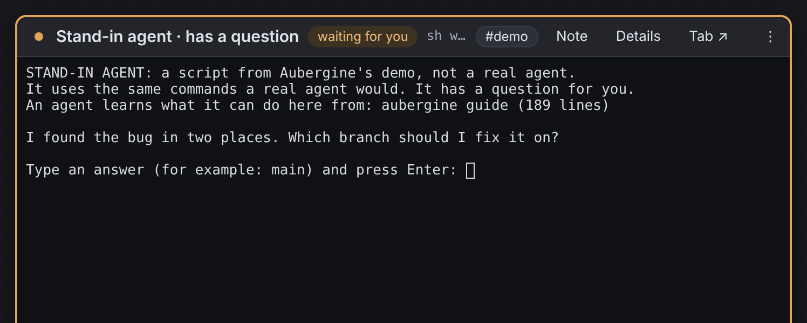

Saber cuándo Claude Code termina o te espera
Le das una tarea a Claude Code, te pones con otra cosa y vuelves veinte minutos después para descubrir que lleva esperando un sí desde el minuto dos. Aubergine muestra en una sola página qué terminal está trabajando, cuál te espera y cuál ha terminado.
Lo que se suele hacer
Claude Code ejecuta hooks, comandos tuyos, en momentos como cuando se detiene (Stop) o envía una notificación (Notification). La respuesta habitual es un hook en tus ajustes de Claude Code que reproduce un sonido o muestra una notificación de escritorio. Funciona, y los scripts los escribes y los mantienes tú.
Lo que hace Aubergine
Inicia Claude Code desde Aubergine: New terminal ▾ → Claude Code arriba de la lista de terminales, o C. Aubergine inicia claude con un archivo de ajustes que genera en su propia carpeta de datos y que indica en la línea de comandos. Tu propia configuración de Claude Code no se toca. Los hooks de ese archivo le dicen a la página qué está haciendo el agente:
- cuando envías un prompt, la terminal muestra working (trabajando), y el prompt se añade al registro de su nota;
- cuando el agente te necesita (una pregunta de permisos, o está inactivo esperando una entrada), su borde toma el color de la espera, y su título y su fila en la lista dicen waiting for you (te está esperando);
- cuando se detiene, la terminal muestra finished (terminado).


El contador junto a For you, arriba a la derecha de la página, es todo lo que te espera, en todos los proyectos: terminales con una pregunta, y ejecuciones por aprobar, borradores por leer y tareas propuestas. Al pulsarlo se abre Runs (ejecuciones), cuya columna Waiting for you es esa lista. La pestaña de un lienzo muestra cuántas de sus terminales esperan.
La siguiente que espera. W va a la siguiente terminal que te espera mientras ninguna terminal tiene el teclado; en macOS ⌃⌘J lo hace también desde dentro de una terminal. En los demás casos está en la paleta.
Notificaciones desde la página abierta. Settings → Notifications tiene Notify me on the desktop when a terminal starts waiting (avisarme en el escritorio cuando una terminal empiece a esperar). Si lo activas, la página muestra una notificación de tu navegador cuando una terminal empieza a esperar o su agente ha terminado, salvo que estés mirando esa terminal. El navegador te pide permiso una vez.
Reglas. En la pestaña Rules (reglas) de Runs, una regla puede Notify me (avisarme) cuando una tarea está hecha, una tarea falló, una tarea te necesita, se te pide algo, o una programación se disparó o no pudo ejecutarse: una notificación desde la página abierta, con una frase de lo que pasó.

Otros agentes, y un claude que escribiste tú
Aubergine no lee la salida de una terminal para adivinar. Cualquier otro agente, o cualquier programa, dice lo mismo por sí solo con aubergine attention waiting "what it needs", aubergine attention working y aubergine attention done en su terminal. aubergine guide --snippet imprime cinco líneas para el archivo que tu agente lee al empezar una conversación; le dicen que ejecute aubergine guide, que explica estos comandos.
Un Claude Code que iniciaste escribiendo claude en una terminal normal es, para Aubergine, un shell ocupado con un programa: no hay waiting for you. Inícialo desde el menú, o añade a mano a tus propios ajustes los hooks que imprime aubergine hooks print; fuera de una terminal de Aubergine no hacen nada.
Lo que no hace
- Ningún sonido propio. Aubergine no reproduce ninguno. Una notificación suena solo si tu navegador o tu sistema lo hacen con las notificaciones.
- Nada mientras no haya una página abierta. Las notificaciones vienen de una página de Aubergine abierta en tu navegador; el servidor no envía ninguna por sí solo. Con todas las páginas cerradas, la terminal sigue diciendo waiting for you, y el contador está ahí cuando abres la página.
- Nada de notificaciones push a un teléfono. No hay aplicación ni servicio push. El navegador de un teléfono se puede emparejar para abrir la misma página; consulta Revisa tus agentes desde el teléfono, que no se ha probado en un teléfono real.
- Lo que se comprobó. Las pruebas del navegador comprueban las notificaciones contra un sustituto de las del propio navegador. Cómo se ve una real, y si se muestra siquiera, depende de tu navegador y de los ajustes de tu sistema para él.
Preguntas
¿Cómo recibo una notificación cuando Claude Code termina?
Inicia Claude Code desde Aubergine y activa Notify me on the desktop when a terminal starts waiting en Settings → Notifications. La página abierta mostrará entonces una notificación del navegador cuando una terminal empiece a esperarte o su agente haya terminado. Sin notificación, la terminal dice finished.
¿Puede Claude Code reproducir un sonido cuando necesita una entrada?
Aubergine no reproduce ningún sonido. Una notificación suena si tu navegador o tu sistema la hacen sonar. Un hook tuyo en tus ajustes de Claude Code puede reproducir uno; Aubergine nunca escribe en esos ajustes.
¿Cómo veo qué sesión de Claude Code está esperando cuando ejecuto varias?
En Aubergine el borde de la terminal que espera y su estado están en el color de la espera, su fila en la lista dice waiting for you, y el contador junto a For you dice cuántas cosas esperan. W va a la siguiente.
¿Recibo avisos cuando el navegador está cerrado?
No. Las notificaciones vienen de una página de Aubergine abierta. El estado se conserva, así que las terminales que esperan aparecen marcadas cuando vuelves a abrir la página.
¿Funciona con agentes que no sean Claude Code?
No por sí solo: los hooks están hechos para Claude Code. Cualquier otro agente puede informar de lo mismo con aubergine attention waiting, working y done cuando sus propias instrucciones se lo digan; aubergine guide --snippet imprime las líneas para esas instrucciones.
Relacionado: Claude Code en Aubergine · Reanudar una conversación de Claude Code · Demasiadas terminales
Aubergine no está afiliado a Anthropic. Claude y Claude Code son marcas registradas de Anthropic.
En marcha en cinco minutos
Necesitas macOS con tmux 3.2 o posterior y Node.js 22 o posterior. brew install tmux node instala ambos.
npm install -g @meatgarden/aubergine